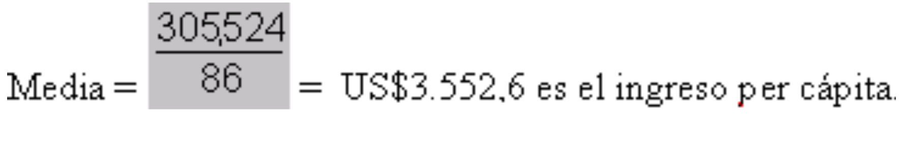

Tema 3: El promedio ponderado
La media también se puede calcular usando el método del promedio ponderado. El promedio ponderado es una forma un poco más compleja de calcular la media. Para explicar el concepto de promedio ponderado, recurriremos a la ayuda del Dr. Math (Para visitar al Dr. Math, vaya a: www.forum.swarthmore.edu/dr.math).
A continuación, reproducimos un intercambio de correos electrónicos entre Jacobo Smith, un estudiante de secundaria, y el Dr. Math.
Fecha: 02/11/98 a las 21:09:00 De: Jacobo Smith Asunto: Ayuda con el "promedio ponderado" Estimado Dr. Math: Estoy en 9º año y nuestro maestro de matemática está explicando el "promedio ponderado". ¿Podría ayudarme dando una explicación sencilla, pero detallada de esto? Gracias por dedicarme su tiempo. Atentamente, Jacobo Fecha: 03/11/98 a las 12:18:47 De: Doctor Peterson Asunto: Re: Ayuda con el "promedio ponderado" Hola, Jacob. Pienso que comenzaré por explicar lo que significa promedio ponderado con un caso simple y luego consideraré un caso más general. Supongamos que tu maestro dice que el examen final equivale a tres pruebas. Entonces, si tus calificaciones son: pruebas: 70, 80, 90 examen final: 100 tu promedio será exactamente como si hubieras obtenido: pruebas: 70, 80, 90, 100, 100, 100 Si deseamos calcular esto en forma directa (usando el método del promedio ponderado), simplemente podemos multiplicar la calificación del examen final por 3 cuando la sumamos, pero también debemos recordar que tenemos que contarla tres veces en el denominador y no sólo dividir por 4. Puedes hacer esto escribiéndolo de esta forma:| Calificación | Ponderación | Valor | |
|---|---|---|---|
| 70 | 1 | 70 | |
| 80 | 1 | 80 | |
| 90 | 1 | 90 | |
| 100 | 3 | 300 | |
| 6 | 540 | --> promedio = 540/6 = 90 |
Espero haberte ayudado.
-Doctor Math (Dr. Peterson) The Math Forum www.forum.swarthmore.edu/dr.math
A continuación exploraremos un ejemplo. Observe el cuadro 9 y trate de responder a la siguiente pregunta utilizando el método del promedio ponderado antes de continuar leyendo. ¿Cuál es el ingreso medio, o ingreso per cápita, de los ciudadanos de los países de Europa Oriental indicados en el Cuadro 9?
| País | PNB per cápita (en millones de $US) | Población en millones |
|---|---|---|
| República Checa | 5.200 | 10 |
| Hungría | 4.680 | 10 |
| Polonia | 3.926 | 39 |
| Rumania | 1.555 | 22 |
| República Eslovaca | 3.880 | 5 |
Para calcular el ingreso medio o ingreso per cápita, se suma el PNB de los cinco países del cuadro y se divide el total por la suma total de las poblaciones de estos cinco países. Sin embargo, los datos proporcionados no son el ingreso total (PNB), sino el ingreso per cápita. No se puede sumar el ingreso per cápita para obtener un ingreso promedio regional, porque cada país tiene una población diferente. Polonia, por ejemplo, tiene por sí misma una población total casi equivalente a la de los otros cuatro países juntos. Por este motivo, cada país debe tener una ‘ponderación’ distinta cuando se calcula el ingreso per cápita promedio regional. Por consiguiente, se aplica el método del promedio ponderado para calcular el ingreso promedio de los cinco países representados en el Cuadro 9.
Para calcular el promedio ponderado, se debe multiplicar el PNB per cápita de cada país por su ‘ponderación’, esto es, por la correspondiente población del país. A continuación, se debe sumar el resultado de estos productos y dividir el resultado por la suma total de las poblaciones de los cinco países.
| Calificación (a) | Ponderación (b) | Valor (a) x (b) |
|---|---|---|
| 5.200 | 10 | 52.00 |
| 4.680 | 10 | 46.80 |
| 3.926 | 39 | 153.114 |
| 1.555 | 22 | 34.210 |
| 3.880 | 5 | 19.400 |
| Total = | 86 | 305.524 |
Por lo tanto, el ingreso medio para los seis países de Europa Oriental indicados en el Cuadro 9 es el siguiente:
